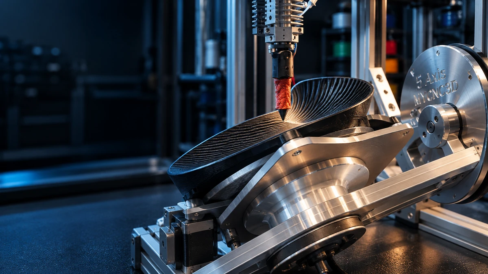

01 / BewegungIn Entwicklung
Mehr-Achs-Bewegung
Wir untersuchen Maschinenarchitekturen und Bewegungsstrategien, die den Materialauftrag über herkömmliche XY-Schichten hinaus steuern.
Die Forschung umfasst Kinematik, koordinierte Bewegungen, Auftragsorientierung und die Einbindung fortschrittlicher Werkzeugbahnen.
Projekt ansehen →